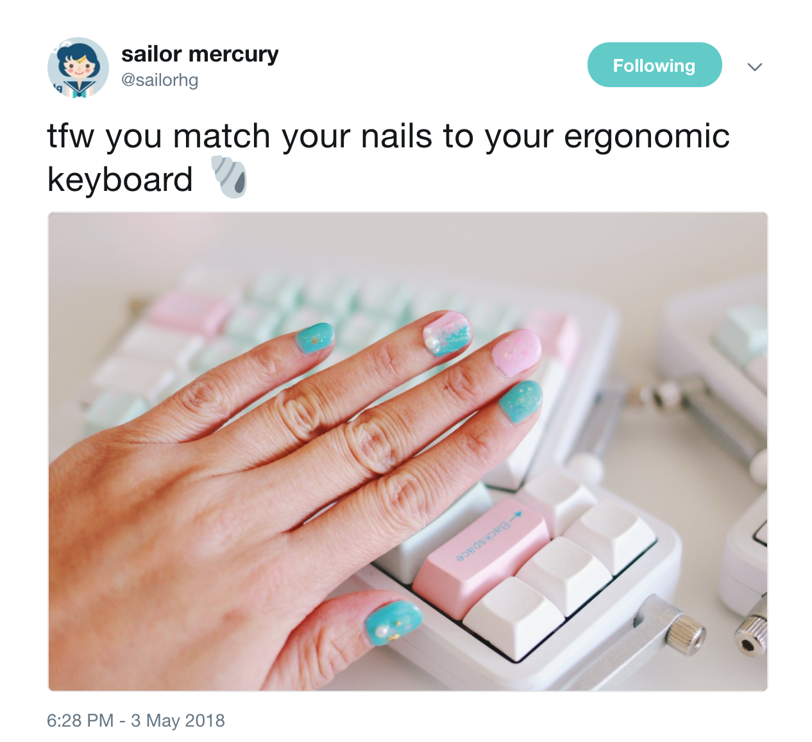
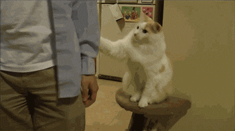

There Are No Snow Days When You Work Remote
Jennifer Wadella

Jennifer Wadella
@likeOMGitsFEDAY
- 9-5 Remote Angular Consultant
- Nonprofit Founder/Director
- International Speaker
- Kombucha brewin' crazy plant lady
 This talk may contain strong language, harsh truths, and serious passion.
This talk may contain strong language, harsh truths, and serious passion.
Some of us are more prepared than others
Check on the Extroverts in your life, They're Not OK

Remote Survival Guide
- Implement personal success strategies
- Protect yourself from employer transition chaos
- Practice Self Care
Strategies to be an effective remote worker.
Strategy 1
Create a Productive Environment

Establish an Office Area
Your Office

Maintain a clean office environment.
Pimp Your Office
Follow a Dress Code
Get dressed every day.
Strategy 2
Establish & Maintain Boundaries

Boundary: Maintain Office Hours
Start and end your day at consistent times. At the end of the work day LEAVE YOUR DAMN DESK!
Boundary: Take a Lunch Break
Eat your food, go for a walk, browse reddit. Breaks are good!
Boundary: Explain Boundaries to Family/friends
- Use a closed door if possible.
- Have a very visual indication of when you are working and not to be interrupted.
- Have a special code word or phrase (for when you want to scream "I'M WORKING RIGHT NOW")
Boundary: Become a Timezone Pro
Just because you can meet doesn't mean you should
How to add a secondary timezone to Google Calendar | Outlook
Strategy 3
Avoid "remote traps"
Trap: Not Showering
Shower. Every. Day.
Trap: Doing Chores
Don't do them during your office hours. They will suck you work hours and corrupt your attention span.
Trap: Slack, social media, and other distractions
Use website blockers or tools -
Trap - working from bed
Strategy 4
Be "Visible" in the company
Check in with your Team
Make Others Aware of Your Progress
Let others know when you're be AFK
TLDR; Be Transparent
Get Comfortable Asking for Help

Contribute to Team Culture
Strategy 5
Engage With Your Local Tech Community

Slack
User Groups
Find a group in your area. https://www.meetup.com
Find Mentoring Opportunities
Survive Employer Transition to Remote
You can only be as successful as your environment will allow.
Likely Remote Company Struggles
- Shifting to Remote Meetings
- Managing expectations
- Having clear and always-available task management
- Effective communication
- Having appropriate performance evaluation systems in place
Meetings ....
Should always be on the calendar.
Should always include necessary join links, numbers, and access codes to call in.
Should be password protected.
Meetings ....
Should be scheduled in consideration of workers in different timezones.
Up Your Calendar-Fu
Managing Expectations
Expectations to Discuss
- In office hours
- Preferred communication medium
- Video call protocol
- Home environment control
- Child care constraints
Clear and always-available task management
As a remote worker, I should be able to get online any time, any where and be able to view my workload AND have the documentation necessary to execute on my job.
- Github?
- Trello?
- Jira?
- Doesn't matter.

Task management system just needs to allow for autonomous employees to pick up work as needed and communicate ticket progress to team.
Tasks ....
- Have clearly outlined requirements
- Have steps for completion
- Have priorities or due dates
Effective Communication
A company that sucks at communicating in person will EXCEPTIONALLY SUCK in a remote environment.
Communication Considerations
Is company-wide information being relayed?
What tools are used for daily communication?
Is the team being made aware of goals, progress, and changes?
What happens when you have a blocker from someone who is AFK?
Slack != documentation
Slack != documentation
Slack != documentation
There should be documentation around
- Environment setup
- Build processes
- Testing
- Deployment
- Company code standards
- Migrations, environment changes, etc
TL;DR Documentation should be available to help workers execute as autonomously as possible.
Having appropriate performance evaluation systems in place
Non-remote companies often use "butt-in-seat" as a crutch to evaluate
Evaluation considerations
Who is setting eval metrics?
What is the technical expertise of management?
What metrics are currently in place?
How is performance judged?
How do you prove you’re worth your paycheck?
REMINDER: You can only be as successful as your environment will allow.
Companies with remote workers will have their management practices successes and failures magnified immensely.
BE PROACTIVE
Recommend tools, solutions, and policy drafts.
Practice Self Care
Further Resources
Remote Work Job Listings
Questions?

Slides available at: tehfedaykin.github.io/NoSnowDaysWhenYouWorkRemote